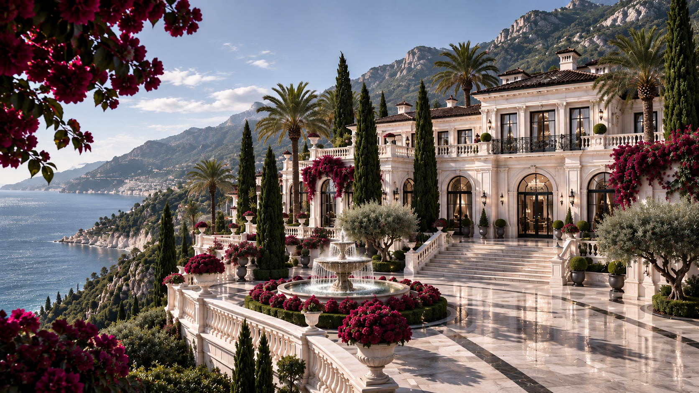
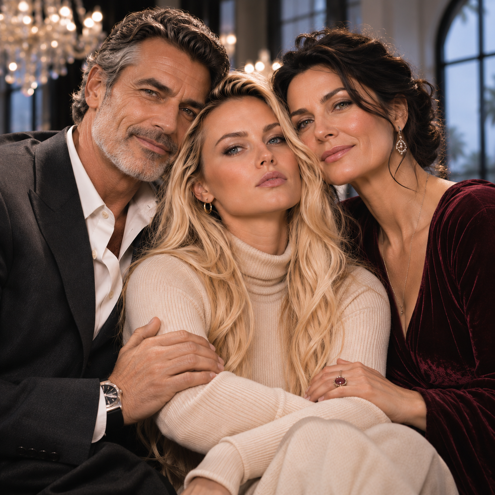
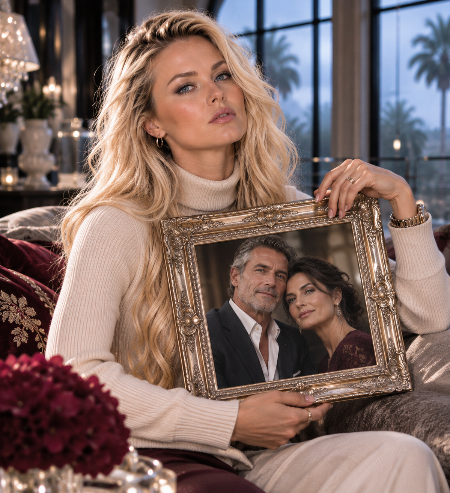
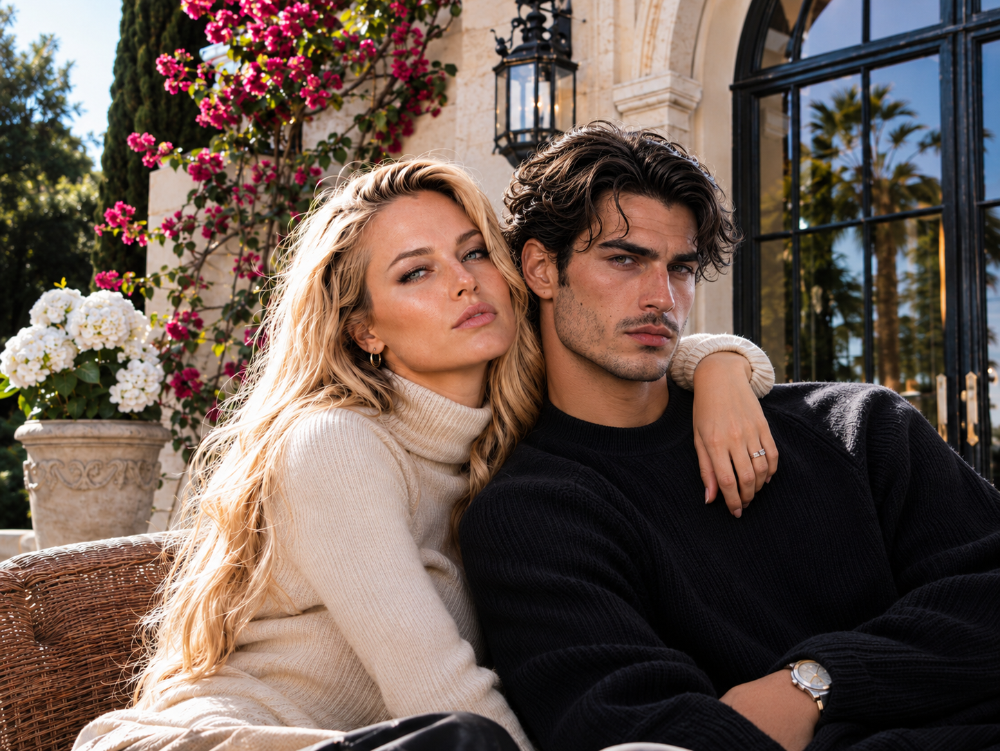

05 / КІМНАТИ ВІТИ
Маєток родини Карузо

VITA SYSTEM / FAMILY ARCHIVE
Фотоальбом
За кадром — найближчі люди Віти. Італійське й українське коріння, родинні світлини та моменти, які хочеться зберегти.
01 / ІТАЛІЙСЬКА РОДИНА
Сімейні світлини / 02Франческа Карузо
Італійська бабуся Віти
Тобі — песик родини

02 / УКРАЇНСЬКА РОДИНА
Сімейні світлини / 03Стефанія
Українська бабуся Віти


03 / БАТЬКИ ВІТИ
Сімейні світлини / 02Ерік та Ясмін Карузо
Батько й мати Віти


04 / БРАТ ВІТИ
Сімейні світлини / 01Марко Карузо
Віта з братом Марком
